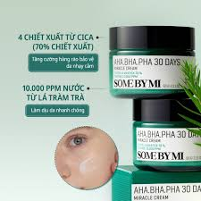

290.000đ
Thương hiệu: Some By Mi (Hàn Quốc)
Loại da phù hợp: Da dầu, da hỗn hợp, da dễ bị mụn.
Some By Mi AHA BHA PHA 30 Days Miracle Cream được thiết kế dành cho làn da dầu và da dễ bị mụn. Công thức chứa bộ ba acid AHA, BHA và PHA giúp loại bỏ tế bào chết nhẹ nhàng, làm sạch lỗ chân lông và hỗ trợ cải thiện tình trạng mụn.
Kết cấu kem dạng gel nhẹ, thẩm thấu nhanh vào da và không gây cảm giác bí da. Sản phẩm còn chứa các thành phần làm dịu như tràm trà và rau má giúp giảm kích ứng, hỗ trợ phục hồi da và mang lại làn da khỏe mạnh, mịn màng hơn khi sử dụng đều đặn.